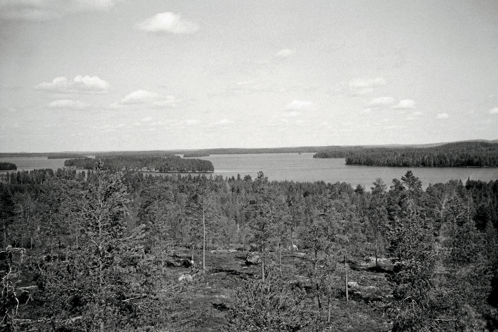
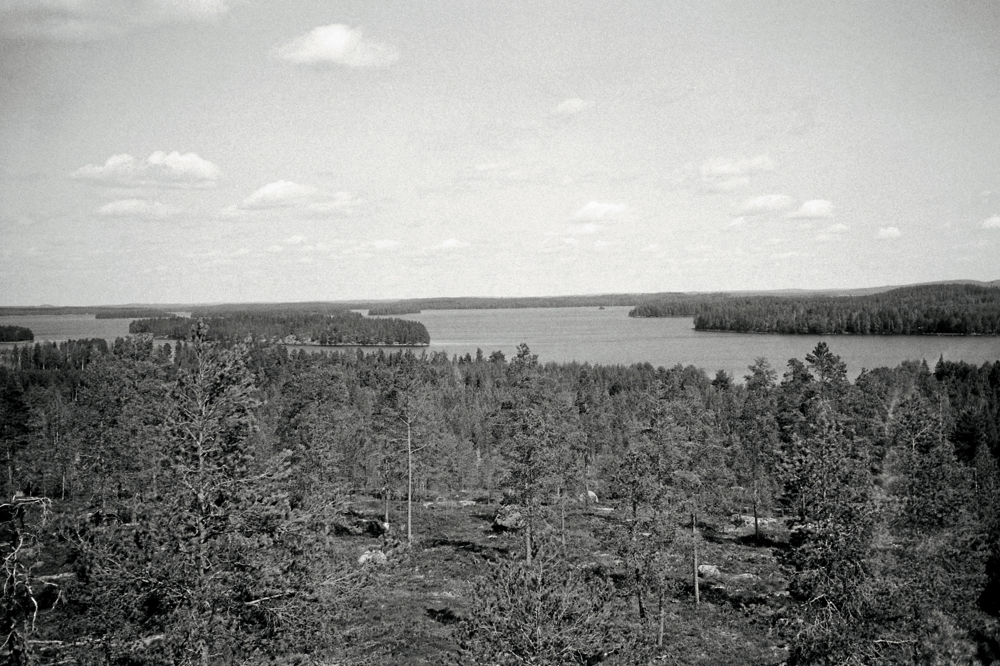

Miksi Suomessa matkailu kannattaa?
Metasearch engines conduct searches across multiple independent search engines. Metasearch engines often make use of "screen scraping" to get live availability of flights. Screen scraping is a way of crawling through the airline websites
getting content from those sites by extracting data from the same HTML feed used by consumers for browsing (rather than using a Semantic Web or database feed designed to be machine-readable). Metasearch engines usually process incoming data to eliminate duplicate entries, but may not expose "advanced search" options in the underlying databases (because not all databases support the same options). Aggregators usually take a cut of each sale made through their websites.[2][3
 
